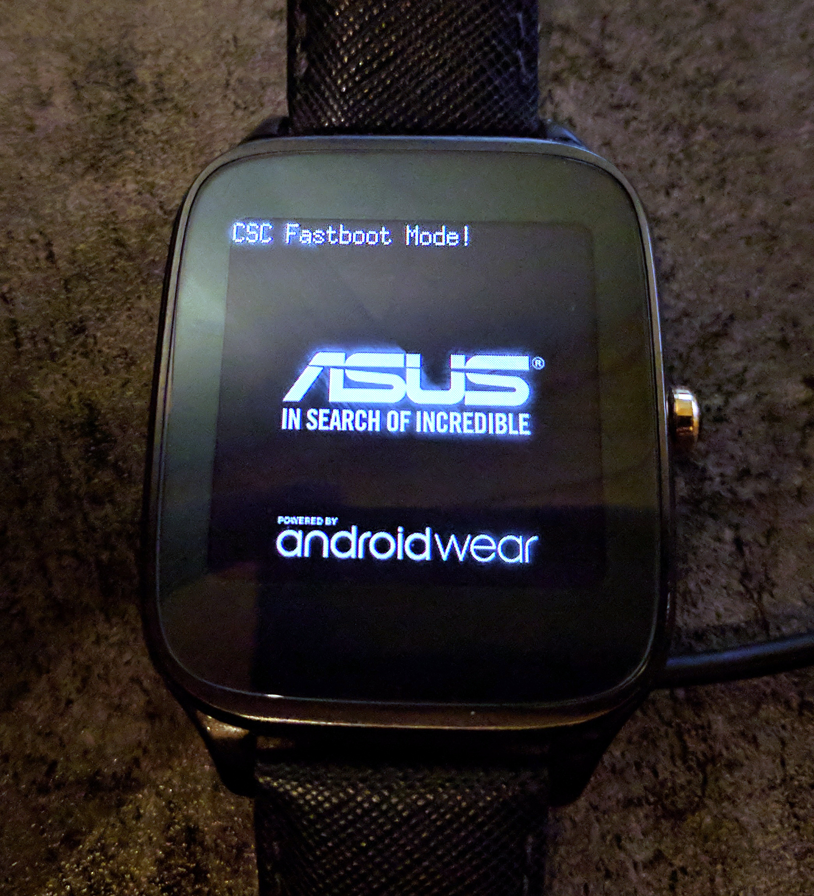

Asus Zenwatch 2 (asus-sparrow)
Jump to navigation
Jump to search
|
 Fastboot mode | |
| Manufacturer | Asus |
|---|---|
| Name | Zenwatch 2 |
| Codename | asus-sparrow |
| Released | 2015 |
| Category | testing |
| Original software | Android Wear 1.0 |
| Hardware | |
| Chipset | Qualcomm MSM8926 Snapdragon 400 |
| CPU | Quad-core 1.2 GHz Cortex-A7 |
| GPU | Adreno 305 |
| Display | 320x320 AMOLED |
| Storage | 4 GB |
| Memory | 512 MB |
| Architecture | armv7 |
{kind=link}
| USB Networking | |
|---|---|
| Flashing | |
| Touchscreen | |
| Display | |
| WiFi | |
| FDE | |
| Mainline | |
| Battery | |
| 3D Acceleration | |
| Audio | |
| Bluetooth | |
| Camera | |
| GPS | |
| Mobile data | |
| SMS | |
| Calls | |
| USB OTG | |
| NFC | |
| Accelerometer | |
|---|---|
| Magnetometer | |
| Ambient Light | |
| Proximity | |
| Hall Effect | |
| Ir TX | |
|---|---|
| TrustZone | |
Contributors
- MartijnBraam
- z3ntu
Entering Fastboot mode
Turn on your watch and swipe from the top left corner (so that be where 11 would be on the watch) as soon as you see the Asus logo.
Device info
Partition info
Boot and recovery are 16MiB
(bootloader) partition: system, ,size: 0x20000000 ,type: ext4 (bootloader) partition: userdata, ,size: 0xa47fbe00 ,type: ext4 (bootloader) partition: cache, ,size: 0x19000000 ,type: ext4 (bootloader) partition: boot, ,size: 0x1000000 ,type: raw (bootloader) partition: recovery, ,size: 0x1000000 ,type: raw
DDR -> /dev/block/mmcblk0p6 aboot -> /dev/block/mmcblk0p5 abootbak -> /dev/block/mmcblk0p10 asusdata -> /dev/block/mmcblk0p13 asusdata2 -> /dev/block/mmcblk0p14 asusfw -> /dev/block/mmcblk0p20 asusgpt -> /dev/block/mmcblk0p21 asuskey -> /dev/block/mmcblk0p15 asuskey2 -> /dev/block/mmcblk0p16 asuskey3 -> /dev/block/mmcblk0p17 asuskey4 -> /dev/block/mmcblk0p18 asuskey5 -> /dev/block/mmcblk0p19 boot -> /dev/block/mmcblk0p11 cache -> /dev/block/mmcblk0p27 misc -> /dev/block/mmcblk0p23 pad -> /dev/block/mmcblk0p12 persist -> /dev/block/mmcblk0p24 recovery -> /dev/block/mmcblk0p25 rpm -> /dev/block/mmcblk0p3 rpmbak -> /dev/block/mmcblk0p8 sbl1 -> /dev/block/mmcblk0p1 sbl1bak -> /dev/block/mmcblk0p7 sdi -> /dev/block/mmcblk0p2 ssd -> /dev/block/mmcblk0p22 system -> /dev/block/mmcblk0p28 tombstones -> /dev/block/mmcblk0p26 tz -> /dev/block/mmcblk0p4 tzbak -> /dev/block/mmcblk0p9 userdata -> /dev/block/mmcblk0p29